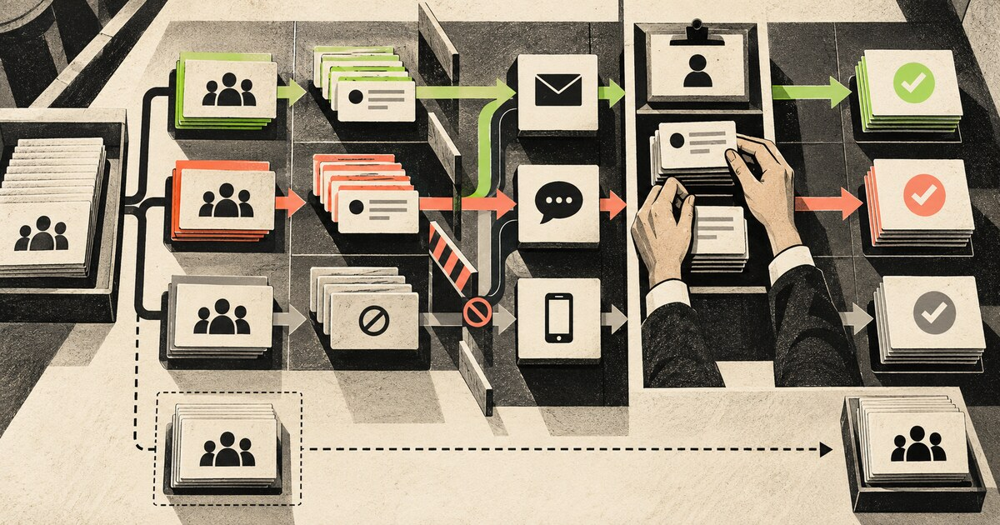
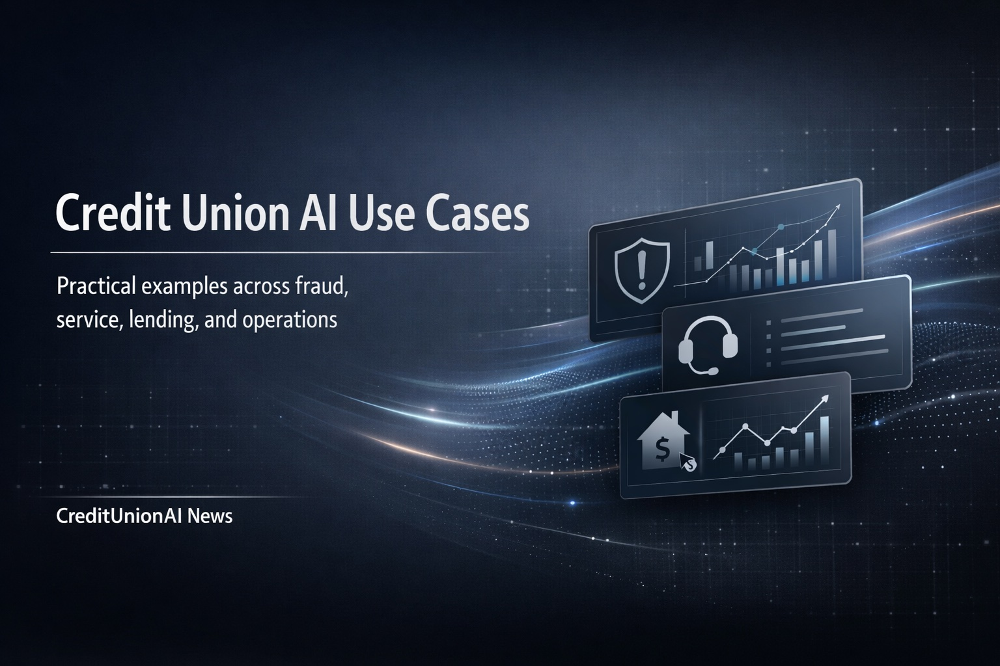

Trust Account Insurance Changes December 1. Start With the Beneficiary Records
NCUA’s December 1 change combines revocable and irrevocable trust coverage. Check repeated beneficiaries and missing records before discussing limits.
Read more →
Practical explainers and playbooks for boards, executives, and frontline teams adopting AI with member trust in mind.
NCUA’s December 1 change combines revocable and irrevocable trust coverage. Check repeated beneficiaries and missing records before discussing limits.
Read more →
NCUA and the banking agencies want oversight to reflect the risk of each vendor relationship. The useful question is how to justify that judgment when a credit union lacks complete information or bargaining power.
Read more →
Saver’s Match applies to eligible 2027 retirement contributions, with claims filed in 2028. Credit unions can prepare clear member explanations now while tracking the still-developing payment and provider-registration process.
Read more →
The two federal charters announced October 30 show different approaches to a specific membership. Their first-year plans are concrete, while actual growth and financial performance remain unreported.
Read more →
A FedNow incentive is worth the amount a credit union can qualify for and retain. The program’s fee cap, sender thresholds and service requirements belong in the business case before a headline discount does.
Read more →
A death notice starts a service case. It does not establish who can see an account, direct a transfer or act on a mortgage.
Read more →Keep notice receipt, investigation evidence, provisional credit, member notices and accountable review on one clock.
Read more →Separate routine authentication from recovery, then preserve evidence, exceptions, notifications and post-recovery monitoring.
Read more →Connect request identity, authority, AI output, human approval, downstream changes and exception closure in one servicing record.
Read more →Keep entity identity, beneficial owners, signer authority, exceptions and channel handoffs in one reconstructable record.
Read more →
Freeze assignment, preserve an untouched control and measure member outcomes and harm on complete denominators.
Read more →Connect purpose, consent, eligibility, suppression, delivery and outcomes in one reviewable offer record.
Read insight →Use AI to organize collections evidence without delegating hardship, communication or remediation decisions to a model.
Read insight →Use AI to organize product evidence without delegating keep, change or retire decisions to a model.
Read insight →Use AI to organize management information while preserving sources, uncertainty, management accountability and board judgment.
Read insight →Govern contract inventory, obligation mapping, performance evidence, renewal decisions and fallback before AI-assisted monitoring scales.
Read insight →Govern source monitoring, applicability, redlines, approvals, implementation and evidence before AI-assisted policy maintenance scales.
Read insight →Govern intake, evidence, root-cause validation, remediation, appeals and fallback before AI-assisted complaint analysis scales.
Read insight →Govern demand signals, staffing recommendations, access tests, pilots and rollback before changing retail delivery.
Read insight →Govern data, forecasts, pricing recommendations, scenarios, contingency funding and rollback.
Read insight →Separate policy, recommendations, exceptions, evidence and borrower-outcome monitoring before scaling.
Read insight →Use five evidence lanes, hard-stop conditions and time-boxed holds to decide what to scale, fix or retire.
Read insight →Measure quality, member outcomes, learning, workload, fairness and controls without creating an opaque worker score.
Read insight →Test the answer, approved knowledge, human handoff and correction path before AI-assisted service scales.
Read insight →Build one traceable record for system scope, versions, tests, approvals, monitoring and retirement.
Read insight →Define decision authority, trace the evidence, test reasons and outcomes, and design exceptions before scaling.
Read insight →Test the complete member task across assistive technology, authentication, error recovery and human escalation.
Read insight →Define data return, model transition, evidence retention, service continuity and shutdown tests before the contract is signed.
Read insight →Route disputes, hardship, legal protections, fraud, consequential decisions and weak evidence to qualified human review.
Read insight →Review source accuracy, authority, fairness, privacy, accessibility, channel risk, escalation and evidence before release.
Read insight →Baseline the workflow, count lifecycle cost, risk-adjust benefits and release funding only when evidence earns it.
Read insight →Validate authority, source accuracy, fair lending, reason codes, valuations, exceptions and rollback before launch.
Read insight →Map tasks, set AI permission levels, train by role and measure the human handoff before scaling.
Read insight →
Where AI is already showing up in fraud, member service, lending, compliance, marketing, and internal operations.
Read insight →AI is embedded in fraud tools, lending workflows, and employee systems. The gap is not adoption, but visibility and governance.
Read insight →How CES trends point to AI becoming core infrastructure, decision support, and conversational by default.
Read insight →Identify repetitive work, measure impact, and define handoffs where humans stay in control.
Read insight →